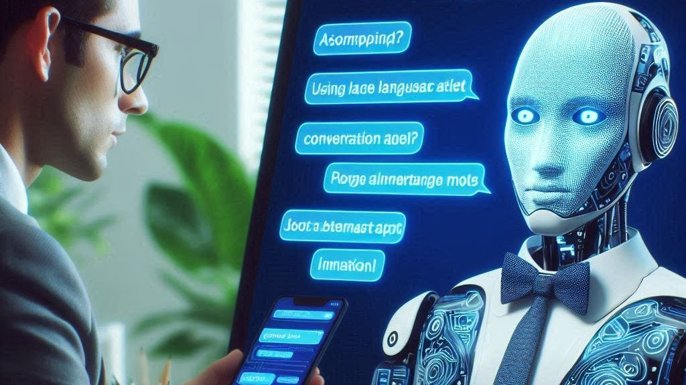
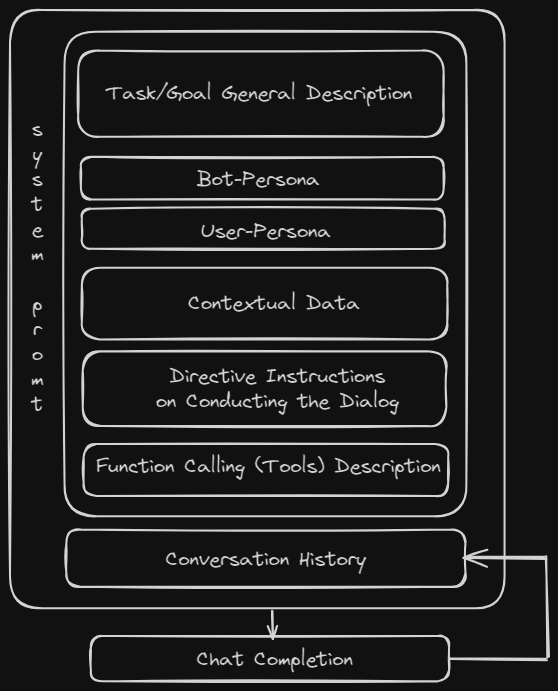

A Conversational Agent with a Single Prompt?
Using Large Language Models for Chatbot Development: Specializing in Prompt Design

Using Large Language Models for Chatbot Development: Specializing in Prompt Design
In this article, I share my experience in constructing Generative AI prompts to develop Conversational Agents.
First, I will clarify the relevant terms. Then, I will provide a brief overview of how we can utilize Large Language Models (LLMs) as intelligent conversationalists. Finally, I will present some compelling use cases where I have refined prompt engineering best practices to implement chatbots solely from no-code requirement specifications (system prompts).
Conversational Agents
Years ago, during my previous academic career (specifically as an assistant researcher at ITD-CNR), my research leader and other researchers always referred to chatbots as conversational agents. This perplexed me, as I’m particular about terminology in computer science. I always understood an agent to be any kind of software that intermediates among humans to perform some task (usually delivered by a human).
My point was that not every chatbot is truly an agent in functional terms.
For example, consider a voice system that acts as an assistant (nowadays we might call it a voice copilot) for a worker, assisting them in accomplishing specific real-life working tasks. Is it correct to define this system as a conversational agent? Maybe not, because it lacks agentive functionality. The term assistant may be more appropriate for augmented-reality scenarios like this (read also my previous article, Voice-cobots in industry. A case study). However, I admit that historically, in the scientific and academic community, conversational agent and chatbot have been used as synonyms.
Nevertheless, things have become more confusing with recent advancements in LLM-based autonomous agents. In this research area, which is broader than conversational applications, agents can autonomously define and execute micro-tasks based on a human-provided description in natural language (the system prompt) of a specific high-level duty or activity. This is a fascinating area of research with potentially disruptive practical applications, and there are many software frameworks available, but that’s a slightly different topic. Let’s now focus instead on the conversational application verticals.
Overall, I use the term Conversational Agent to refer to a specific type of agent that performs conversational tasks on behalf of a human.
Progress with LLM-based conversational agents allows us to build chat systems with a single prompt based on cognitive architectures. By utilizing advanced state-of-the-art LLMs, developers can describe what the chatbot should do without having to program the conversation as a series of fixed dialog states. From the development perspective, this could be a definitive cost-saving alternative to solutions based on intents, slots, states, and hard-coded flow management.
LLMs as Core Layers for Agent Engines
Long story short, GPT-based Large Language Models have revolutionized the field of conversational AI since the release of GPT-3 by OpenAI. These recent LLMs, trained on vast amounts of text data, can generate human-like responses and engage in meaningful dialogues. Their ability to understand and generate language makes them ideal for building chatbots.
Instruction-based Chat Completion Models
A basic foundation model (a large language model trained with sufficient data to ‘know’ a specific human language) is not sufficient to be a valid engine, capable of making conversations and reasoning.
Simply put, the disruptive improvement in GPT-3 models occurred with GPT-3.5-turbo (the model behind the famous ChatGPT, see my previous article: Reflecting on ChatGPT’s Anniversary). GPT-3.5-turbo is based on the foundation of GPT-3 but enhanced by a supervised training algorithm (HFRL and similar supervised training mechanisms) that enables it to converse with people in a fluid natural language, using polite and ‘controlled’ manner.
More importantly, the models from GPT-3.5 onwards are also instruction-based models because they are trained with programming code (OpenAI coined the term instruct). This last feature enabled some sort of ‘reasoning’ abilities. The LLMs are now able to perform themself some programmatic ‘logic’ understanding, such as concepts of programming languages including sequences, conditionals, and iterations.
Function Calling Feature
Another disruptive feature that nearly all state-of-the-art generative models now possess is the ability to call external functions/APIs (sometime called tools in LLM agents jargon). This is achieved through special fine-tuning of the aforementioned models, enabling LLMs to ‘call’ external functionalities, such as programs made in any programming language, to solve specific requests or actions and retrieving real-time data. This is a fundamental need in a cognitive architecture, where the LLM is the core ‘reasoning’ component that autonomously retrieves information from external systems or invokes actuators.
The function-calling feature is crucial for autonomous agents but not essential for building basic conversational agents. However, function-calling becomes a must-have when the conversational system needs to invoke external APIs. For example, a customer care assistant might need to open a ticket in an internal ticketing system or query the system to monitor the ticket status and inform the customer during the conversation.
The recent generative language models (instruction-based LLMs fine-tuned for chat completions, also enabled by function calling) can understand logic and instructions (through directive written in natural language in the prompt) and have an improved capacity to conduct human-like conversations in nearly any natural language. Additionally, these models can interact with external (proprietary) APIs. All in all, today’s models like GPT-4 or equivalents are viable engines for building autonomous agents capable of performing task-oriented conversations typically handled by humans.
In the next paragraphs, I will delve into this with some examples, but first, I will introduce the prompt engineering approach I used.
Prompt Design for Task-oriented Conversations
Prompt engineering is the practice of designing and refining input prompts to effectively guide the behavior and output of language models. By carefully crafting these prompts, users can enhance the model’s ability to understand and respond to complex instructions, ensuring more accurate and contextually appropriate outputs. This technique is crucial for optimizing the performance of state-of-the-art generative models, enabling them to perform specific tasks, generate creative content, and simulate ‘human-like’ conversations with precision.
The techniques I experimented with are about writing system prompts to instruct the LLM to conduct conversations in specific application domains to achieve particular tasks.
In-Context Learning
In all use cases I’ll introduce, I used a similar approach: the system prompt is composed of an introductory context section where I defined 1: the goal of the conversation (or task), 2: the bot-persona (the description of the agent’s characteristics/character, using the usual conversation design metrics), 3: the user persona (a description of the user profile), 4: The core part of the context is contextual data useful for the current conversation session. For example, if the conversation is an interview for a job applicant, this data includes the job description file and the candidate’s curriculum. More generally, the technique is akin to the one made famous with Retrieval Augmented Generation (RAG) applications, where you ‘stuff’ inside the prompt data retrieved (maybe with some embeddings database or any specific vertical data retrieval system).
When considering the data needed to accomplish a task-oriented conversation, it could be anything that fits into the prompt context window size (4K tokens, 8K tokens, 16K tokens, and so on). In all practical use cases I have experimented with and mentioned below, a context window of 4–7K tokens has been entirely sufficient for the purpose.
Directive Instructions on Conducting the Dialog
After the context part of the prompt, in the following instruction section, I detailed the required steps (actions to be accomplished in a specific order). This is the tricky part where you instruct the model not just on how to conduct the conversation in terms of social practices and human conventions, but also provide guidelines regarding the topics to cover, possibly including explicit questions or general behaviors to adopt.
Here, you instruct the LLM on what topics must be covered in the chat, how to conduct the dialogue with more or fewer guidelines, and how to guide the conversation from point A to the desired point B. Finally, the instructions must include criteria for deciding when to end the conversation session, which depends on the specific application and can be a bit tricky to implement.

Some Application Use cases
I introduce three dialogue systems I prototyped for entirely different verticals. All these applications have in common the fact that I wrote the conversation program as a single system prompt for an LLM. In chronological order of my developments:
Case 1: A Virtual Caregiver for Patient Telemedicine Visits
I have been involved in some prototypes related to the healthcare vertical, specifically in transcribing and extracting data from practitioner-patient visits for Conversational Analysis (CA) using LLMs. As a side project, I developed an emulation of a remote monitoring visit where a virtual assistant (acting as a practitioner or caregiver) contacts a patient every day via an instant messaging app to monitor their health status, particularly considering the patient is potentially affected by COVID-19. The virtual caregiver asks the patient about their health status, chats with them in a very natural way, delves into symptoms, and engages in small talk if the patient initiates it, while keeping the conversation focused on retrieving certain parameters: health status, temperature, blood oxygenation, and a few other variables.
Once all the requested information is retrieved, the virtual caregiver says goodbye to the patient and closes the conversation, internally returning a data structure (a JSON) containing all the information obtained from the patient. Interestingly, in this case, the end of the conversation is not strictly necessary. After the initial session, the user can re-engage with updates on their symptoms. The virtual caregiver replies to any patient questions or statements about their symptoms and internally emits any data updates via a function call. This example is also interesting for its psychological support aspects, but that’s another story.
You could argue that the described conversation is just an old-fashioned form-filling that one could implement with a simple hard-coded chatbot. However, the novelty of the LLM-based conversation is the naturalness of the interaction. This variance in how the system conducts any new conversation session, allowing user digressions while returning to the programmed goal of gathering information, is invaluable!
Case 2: A Customer Care Assistant
This is a classic chatbot application that I already mentioned in the article. Imagine a virtual assistant helping an employee of a very large company submit requests or report issues that can be tracked by opening tickets on a specific backend system. The user must also be able to ask about the status of previously submitted tickets. This is a very common chatbot application that I delivered in production as a standard state-machine flow tool seamlessly integrated with external REST APIs.
Subsequently, I tried to re-implement the same application using an LLM-based approach. The initial application involved highly constrained workflows, so what’s the advantage of using an LLM as a dialog conductor? I also struggled with implementing these programmatic steps that are simple to implement with a hard-coded flow. So, what are the advantages of implementing all this logic with a ‘declarative’ approach instead of using a standard software program?
There are two interesting pros: the conversation built by the LLM seems more ‘natural’, emulating the behavior of a human being (e.g. a help desk operator), allowing the user to describe an issue in various ways and guiding them to explain the problem concisely to gather all the necessary data.
The second advantage is the reduction in development time: with the single-prompt approach, the chatbot developer is no longer a software programmer using a chatbot development tool, but rather a prompt engineer with conversational design skills, who writes the chatbot specification as a special text in a natural language (English, Italian, etc.).
Besides the prompt engineer, we still need a backend developer who knows how to integrate external APIs, but what’s nice is that these two roles are quite distinct, and the software responsibility boundaries are clear.
Case 3: A Virtual Job Position Interviewer
The most fun and intriguing application I’m experimenting with is in the Human Resources vertical. Using the usual in-context learning prompt-writing approach, I built an emulator of a recruiter conducting an interview with a person who applied for a certain job position.
In the prompt context, I included the job post description and the candidate’s curriculum vitae. In the instruction section, I taught the LLM to act as a perfect recruiter, asking questions to verify all matches and mismatches between the role description and the candidate’s experience. The results are very impressive, and the virtual interviewer’s behavior is smart enough to detect weaknesses and strengths of the candidate by comparing the CV with the required skills. As a test candidate myself, I have been unable to lie in response to such precise investigative questions.
Since I’m not an expert recruiter myself, my approach could surely be improved with input from a domain expert in human resource recruiting. Nevertheless, my current experiments are astonishing. The system conducts a natural (similar to a human-to-human dialog) yet very rational interview, exploring points of weakness and verifying the truth of user statements in a polite and positive manner (as I instructed the bot-persona to do).
Besides the above application, I also created collateral LLM-based tools, such as a ‘pre-interview’ prompt to decide if a candidate deserves to be interviewed and some ‘post-interview’ tools that analyze the interview dialog and produce a structured report with a final ranking, but these are collateral (one-shot) LLM-based applications.
Prompt Development Challenges
LLMs are not deterministic. This has certain advantages, such as enabling smooth, fluent, always slightly different conversation variations, but it also presents some drawbacks. When considering the applications covered here, this randomness can potentially create issues. The main challenge I encountered was not the outcomes of the first prompt I designed, but the subsequent editing required to refine it to adjust some incorrect or unexpected runtime behavior.
Related to this, LLMs suffer from what I call fragility syndrome: you may have an initially well-functioning prompt, but even a minor, seemingly insignificant modification of a statement or a typo (by the way, typos are absolutely forbidden when writing prompts; please use a spell checker!) can cause different and unexpected runtime behaviors. Fixing this usually requires a lot of time spent on trial and error, where I rethink the prompt and often have to rewrite or reorganize it following a new, more logical approach.
For the prototypes I created, I admit I did not use any automated testing tools to validate the LLM outputs. This automatic evaluation is not a trivial task, although there are some emerging tools that can help prompt engineers validate prompts (this is a topic for a future article).
Tentative Conclusions
There is a lot of hype around optimal use cases for LLMs. Since 2023, I have seen hundreds of papers, articles and videos concerning RAG/LLM applications. While LLM-enabled data retrieval-based chatbots are certainly an important use case, for me, as a conversation designer also, the perfect use case for state-of-the-art LLMs is to exploit the conversational capabilities embedded in LLMs trained and fine-tuned on human conversations.
The no-code dream of developing chatbots has now become a reality with just prompt engineering skills?
What are your thoughts?
#promptEngineering #LLMs #generativeAI #GenAI #nocode #conversationalAgents #AutonomousAgents #chatbots #ConversationDesign #AI #MachineLearning #NaturalLanguageProcessing #AIChatbots #AIApplications
Originally published on Medium.